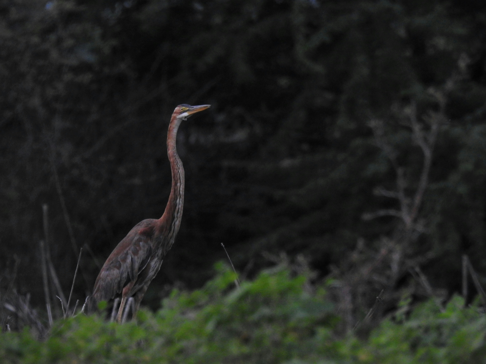

The Purple Heron is a tall, elegant wetland bird with rich brown, purple-grey, and chestnut tones that distinguish it from the more uniformly grey Great Egret and Grey Heron. It is usually found in reedbeds, marshes, riversides, lakes, ponds, flooded fields, and other wetlands with dense vegetation. It feeds on fish, frogs, insects, small mammals, and other aquatic or wetland prey, often standing motionless before striking with its long pointed bill. Its long neck and legs allow it to hunt effectively in shallow water and among reeds. Despite its size, it can blend surprisingly well into dense wetland vegetation.
Family: Ardeidae